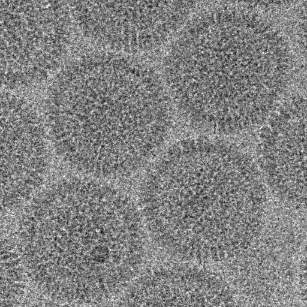
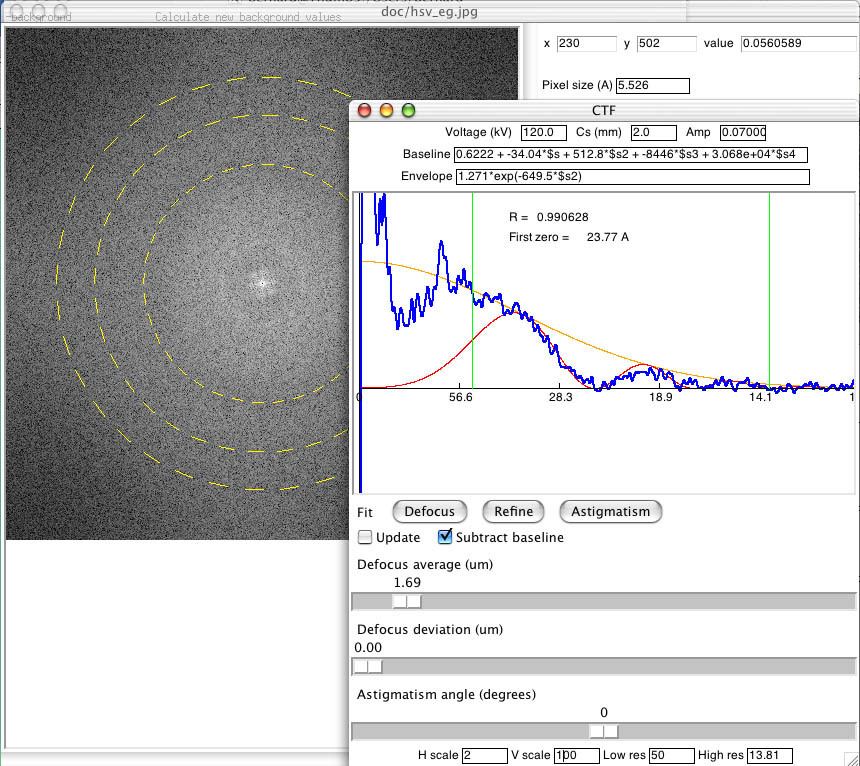

Determining/fitting the CTF of a micrograph
Part of a micrograph of herpes simplex virus 1 (HSV 1) taken by Naiqian
Cheng:

How to fit the CTF:
- Open the image in bshow and transform using the
"Image/Power spectrum" menu item.
- Make sure the pixel size is correct (in this case it is
5.526
angstrom/pixel).
- Select the "Micrograph/Fit CTF" menu item.
- Make sure all the parameters
(voltage, Cs and amplitude contrast) are correct.
- Click on "Defocus".
- If the fit is unexpected, move the "Defocus average" slider to a more reasonable value.
- Click on "Refine".
- Click on "Subtract baseline".
- Change the "H scale" and "V scale" parameters to adjust the plot scaling.
- Click on "Astigmatism".
- Adjust the sliders to improve the fit.
- Select the "Micrograph/Write parameters" menu item and save
the parameters in a parameter file (a STAR file).

The same result can be obtained
using bctf on the command line:
bctf -verbose 7 -action prepfit -Postscript hsv_ctfit.ps -sampling 5.526 hsv_eg.jpg